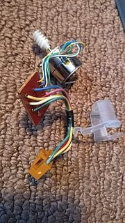

-
This is the motor for the odometer on my digital dash 86 z31. My odometer hasn't been rolling so I popped it open to hopefully fix it. Is there a wiring diagram for this thing or doesn't anyone know what each wire is? Or how to test if the motor runs? Thanks! -
Did you check the speed sensor first?
I didn't see any wiring diagrams for the motor in the Service Manual. Just has an arrow off microcomputer. There's info on the speed sensor though.
http://xenonzcar.com/z31/FSM/1986/EL.php
-
For anyone looking to figure out how to test this: here it is. The motor for the odometer is a stepper motor. To check if the motor is good, grab a multimeter and set it to voltage DC. Then grab ur prong things and put one into yellow and the other into blue. Spin the motor by hand. If you get moving numbers that set of windings in the motor is good. Do the same thing again but with green and red. If you get voltage on both tries, ur motor should be fine. -
If the speedometer works, then the speed sensor is good. if the speedometer doesn't work, then the odometer won't work either. Simply put, if the odometer is not working, but the speedometer is, then it's not the speed sensor.--------------
Legal stuff:
**Nissan Employee**
Any information shared is simply my own opinion and NOT the opinion of Nissan
not legal stuff:
'88 300ZX 2+2-- driving… just details left
'22 Q60RS-- I tell the wife it's hers…
'87 Chaparral bowrider-- the next project
'00 Corolla-- kids car.
'14 E-350-- Gotta haul those kids in something.Comment

Copyright © 2006–. All rights reserved. Privacy Policy
Comment